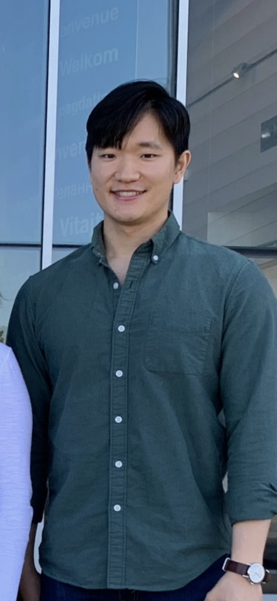

Ben Zhou
Locy Hall, 200 A/B Email: byzhou01@math.northwestern.edu |
 |
| Research | Publications | Teaching | Writings |
|
Research I am a postdoc at Yau Mathematical Sciences Center, Tsinghua University advised by Shing Tung-Yau and Artan Sheshmani. I recently graduated my Ph.D. from the Department of Mathematics at Northwestern University, where my advisor was Eric Zaslow. Here is my CV. My research interests are Mathematical Physics, Gromov-Witten Invariants, Mirror Symmetry, Algebraic Geometry. I am also interested in machine learning and mathematical finance. Here's a link to the schedule of the Northwestern Geometry/Physics Seminar. |
|
Publications Quantum Theta Functions from Open Mirror Symmetry (joint with Tim Graefnitz, Helge Ruddat, and Eric Zaslow), in preparation. Higher genus local Gromov-Witten invariants from projective bundles, in preparation. |
|
Teaching TA for Math 395: Undergraduate Seminar, Northwestern University, Spring 2024 TA for Math 365: Computational Methods in Mathematics, Northwestern University, Spring 2024 TA for Math 351-0: Fourier Analysis and Boundary Value Problems, Northwestern University, Fall 2023 TA for Math 240-0: Linear Algebra, Northwestern University, Fall 2023 TA for Math 340-0: Geometry, Northwestern University, Spring 2022 TA for Math 368-0: Introduction to Optimization, Northwestern University, Spring 2022 TA for Math 366-1: Mathematical Models in Finance, Northwestern University, Winter 2022 TA for Math 336-1: Introduction to Theory of Numbers, Northwestern University, Winter 2022 TA for Math 342: Introduction to Differential Geometry, Northwestern University, Fall 2021 TA for Math 320-1: Real Analysis, Northwestern University, Fall 2021 TA for Math 300: Foundations of Higher Mathematics, Northwestern University, Spring 2021 TA for Math 230-2: Multivariable Integral Calculus, Northwestern University, Winter 2021 TA for Math 230-1: Multivariable Differential Calculus, Northwestern University, Fall 2020 TA for Math 230-1: Multivariable Differential Calculus, Northwestern University, Fall 2019 TA for CS 229: Machine Learning, Stanford University, Fall 2016 I am pleased to be nominated the Best Teaching Assistant Award of Department of Mathematics, Northwestern University for the academic year 2021-2022! I express my sincere thanks to my students and teachers. I offer private tutoring in mathematics, computer science, and statistics. I also offer freelance data science services. Please email me if interested. |
|
Writings Curve Counting and Modular Forms Collective Coordinates and Kontsevich-Soibelman Wall Crossing Formula Every smooth cubic surface has exactly 27 lines My qualifying exam syllabus and presentation on open Gromov-Witten invariants. Hodge-Theoretic Mirror Symmetry for the Quintic Threefold and Elliptic Curve Cheeger-Gromoll Splitting Theorem Spacetime Geometries - Undergraduate Thesis, written under the supervision of András Vasy |